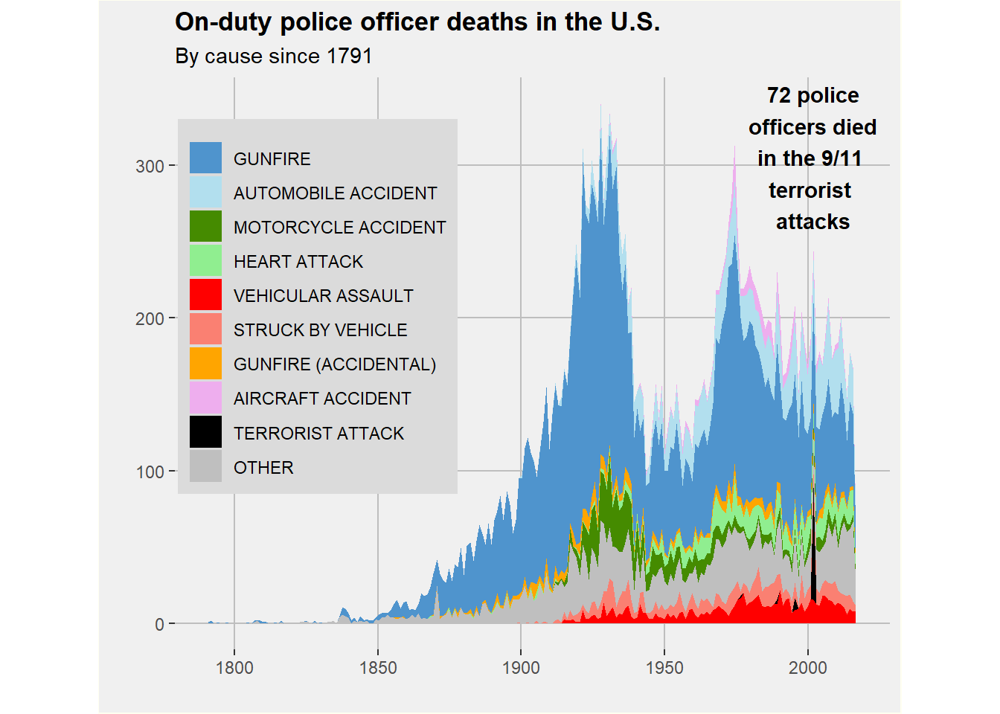

Visualization
I will attempt to recreate the following graph:
FiveThirtEight original source
538 Repository (I only used the cleaned data file)
Load Libraries.
#load libraries
library(tidyverse)## -- Attaching packages --------------------------------------- tidyverse 1.3.0 --## v ggplot2 3.3.3 v purrr 0.3.4
## v tibble 3.0.6 v dplyr 1.0.4
## v tidyr 1.1.2 v stringr 1.4.0
## v readr 1.4.0 v forcats 0.5.1## -- Conflicts ------------------------------------------ tidyverse_conflicts() --
## x dplyr::filter() masks stats::filter()
## x dplyr::lag() masks stats::lag()library(ggplot2)
library(here)## Warning: package 'here' was built under R version 4.0.5## here() starts at C:/Users/algla/OneDrive/Desktop/MADA/AMANDAGLATTER-MADA-portfoliolibrary(dplyr)
library(extrafont) #I found this package and it can be used to change fonts.## Warning: package 'extrafont' was built under R version 4.0.5## Registering fonts with RLoad data.
#Load data
data_location <- here::here("data", "clean_data_538.csv")
#Load data, sometimes you need to restart r or setwd for this to work
data_538 <- read.csv(data_location)Let’s start recreating this plot using ggplot2.
data_538[['date']] <- as.POSIXct(data_538[['date']], format = "%Y-%m-%d")
#^this is to convert the date category to an R friendly format.
data_538 %>% ggplot(aes(x = date, fill = cause_short )) +
geom_area(stat="bin", bins = 214)
Here is another attempt only using the categories on the original figure, excluding the other category.
data_538[['date']] <- as.POSIXct(data_538[['date']], format = "%Y-%m-%d")
data_1_5 <- data_538 %>% filter(cause_short == c("Gunfire", "Automobile accident","Motorcycle accident","Heart attack", "Vehicular assault", "Struck by vehicle", "Struck by vehicle", "Gunfire (accidental)", "Aircraft accident", "Terrorist attack"))
data_1_5 %>% ggplot(aes(x = date, fill = cause_short )) +
geom_area(stat="bin", bins = 214)
I’m not sure why the y axis is only in the tens here while it is in the 100s in the first graph.
As previously stated, there are too many categories, so we have to refine the list down to aircraft accident, automobile accident, gunfire, gunfire (accidental), heart attack, motorcycle accident, struck by vehicle, terrorist attack, vehicular assault, and put the rest into the “other” category.
It looks like we have a lot of wrangling and cleaning up to do.
First, I am putting any cause that is not one of the listed causes into a separate “other” category. Next, I will reclassify the date column from column to dates. Then, I will change all the cause_short names so they are all capitalized like in the original image. I reorder the causes so they appear in the correct order on the legend. Then comes plotting!
#Creating "other" category from extra death causes
data_538_2 <- data_538 %>% mutate(cause_short = case_when(
.$cause_short == "Accidental" ~ "Other",
.$cause_short == "Animal related" ~ "Other",
.$cause_short == "Asphyxiation" ~ "Other",
.$cause_short == "Assault" ~ "Other",
.$cause_short == "Bicycle accident" ~ "Other",
.$cause_short == "Boating accident" ~ "Other",
.$cause_short == "Bomb" ~ "Other",
.$cause_short == "Drowned" ~ "Other",
.$cause_short == "Duty Related illness" ~ "Other",
.$cause_short == "Electrocuted" ~ "Other",
.$cause_short == "Explosion" ~ "Other",
.$cause_short == "Exposure" ~ "Other",
.$cause_short == "Exposure to toxins" ~ "Other",
.$cause_short == "Fall" ~ "Other",
.$cause_short == "Fire" ~ "Other",
.$cause_short == "Heat exhaustion" ~ "Other",
.$cause_short == "Poisoned" ~ "Other",
.$cause_short == "Stabbed" ~ "Other",
.$cause_short == "Struck by streetcar" ~ "Other",
.$cause_short == "Struck by train" ~ "Other",
.$cause_short == "Structure collapse" ~ "Other",
.$cause_short == "Train accident" ~ "Other",
.$cause_short == "Training accident" ~ "Other",
.$cause_short == "Unidentified" ~ "Other",
.$cause_short == "Vehicle pursuit" ~ "Other",
.$cause_short == "Weather/Natural disaster" ~ "Other",
.$cause_short == "9/11 related illness" ~ "Other",
.$cause_short == "Duty related illness" ~ "Other",
TRUE ~ cause_short
))
#Converting the date column from character to date class. I had tried to just use year as the x axis, but it was not specific enough and the spikes did not look as precise as did the original plot.
data_538_2[['date']] <- as.POSIXct(data_538_2[['date']], format = "%Y-%m-%d")
#Changing cause_short categories to uppercase and changing the order to match the original image.
data_538_2$cause_short <- data_538_2$cause_short %>% toupper()#Reordering the cause_short categories so they appear in the correct order in the legend on the plot.
data_538_order <- data_538_2
data_538_order$cause_short <- factor(data_538_order$cause_short, levels = c("GUNFIRE","AUTOMOBILE ACCIDENT",
"MOTORCYCLE ACCIDENT", "HEART ATTACK",
"VEHICULAR ASSAULT",
"STRUCK BY VEHICLE",
"GUNFIRE (ACCIDENTAL)",
"AIRCRAFT ACCIDENT",
"TERRORIST ATTACK",
"OTHER"))Now that we’ve wrangled, let’s create the actual plot.
#Creating the plot
DATAPLOT <- data_538_order %>% ggplot(aes(x = date, fill = cause_short, position = "dodge" )) +
geom_area(stat="bin", bins=214) +
xlab("") + ylab("") +
scale_color_discrete(name = "") +
scale_color_discrete(breaks=c("GUNFIRE","AUTOMOBILE ACCIDENT",
"MOTORCYCLE ACCIDENT", "HEART ATTACK",
"VEHICULAR ASSAULT",
"STRUCK BY A VEHICLE",
"GUNFIRE (ACCIDENTAL)",
"AIRCRAFT ACCIDENT",
"TERRORIST ATTACK",
"OTHER")) +
ggtitle("On-duty police officer deaths in the U.S.", subtitle = "By cause since 1791") + theme(
plot.title = element_text(face = "bold"),
legend.position = c(.2, .5)) +
theme(legend.key = element_rect(fill = "grey")) +
guides(color = guide_legend(override.aes = list(size = 4))) +
scale_fill_manual(values=c("steelblue3", "lightblue2","chartreuse4", "lightgreen","red", "salmon", "orange","thistle2", "black","grey75")) +
theme( legend.title = element_blank(), panel.background = element_rect(fill = "snow1", color = "grey", size = 1)) +
theme(panel.grid.major = element_line(color = "grey", size = .5),
legend.background = element_rect(fill="snow2",
size=0.5, linetype="solid"))## Scale for 'colour' is already present. Adding another scale for 'colour',
## which will replace the existing scale.print(DATAPLOT)
There are still many problems with the plot I created. There are smaller issues like font, dimensions, border, and the inclusion of the arrow pointing to the spike in terrorist-caused deaths on 9/11. The largest issues is that the the actual data appears differently.
At this point, I have shared the above graph with classmates and have gotten feedback. I’m going to take their advice and try again. Now I’m going to continue to alter the figure’s details, like changing the font of the axes to match the original.
Here are some of the changes I plan to make:
Using “plot.background” instead of “panel.background”
Remove minor gridlines
Make the gridline, legend, and background colors more accurate
Make x value the year and y value the
DATAPLOT1 <- data_538_2 %>% ggplot(aes(x = as.Date(date), fill = cause_short, position = "dodge" )) +
geom_area(stat="bin", bins=214) +
xlab("") +
ylab("") +
scale_color_discrete(name = "") +
scale_color_discrete() +
ggtitle("On-duty police officer deaths in the U.S.",
subtitle = "By cause since 1791") + theme(
plot.title = element_text(face = "bold"),
legend.position = c(.2, .6)) +
theme(panel.background = element_rect(fill = "#F0F0F0"),
panel.grid.minor = element_blank(),
plot.background = element_rect(fill = "#F0F0F0"),
legend.key = element_rect(fill = "grey86")) +
guides(color = guide_legend(override.aes = list(size = 4))) +
scale_fill_manual(values=c("steelblue3", "lightblue2","chartreuse4", "lightgreen","red", "salmon", "orange","thistle2", "black","grey75")) +
theme( legend.title = element_blank(), panel.grid.major = element_line(color = "grey"), plot.background = element_rect(color = "ivory")) +
theme(legend.background = element_rect(fill="grey86",
size=0.5, linetype="solid")) +
annotate(geom = "text", x = as.Date("2001-09-11"), y = 305, label = "72 police\nofficers died\nin the 9/11 \nterrorist \nattacks", fontface="bold") + #adding 9/11 label
theme(aspect.ratio=4/5) + scale_fill_manual("",
breaks = c("GUNFIRE", "AUTOMOBILE ACCIDENT","MOTORCYCLE ACCIDENT", "HEART ATTACK", "VEHICULAR ASSAULT","STRUCK BY VEHICLE","GUNFIRE (ACCIDENTAL)","AIRCRAFT ACCIDENT", "TERRORIST ATTACK","OTHER"),
values = c("steelblue3", "lightblue2","chartreuse4", "lightgreen","red", "salmon", "orange","plum2", "black","grey75"),
labels = c("GUNFIRE", "AUTOMOBILE ACCIDENT","MOTORCYCLE ACCIDENT", "HEART ATTACK", "VEHICULAR ASSAULT","STRUCK BY VEHICLE","GUNFIRE (ACCIDENTAL)","AIRCRAFT ACCIDENT", "TERRORIST ATTACK","OTHER"))## Scale for 'colour' is already present. Adding another scale for 'colour',
## which will replace the existing scale.## Scale for 'fill' is already present. Adding another scale for 'fill', which
## will replace the existing scale.Final Figure Comparison
My figure:
print(DATAPLOT1)
Okay, I’m not done quite yet. I think I have not wrangled my data well enough, and that is causing problems.
library(tidyr)
#At this point, I need to sum up each death cause by year
data_long <- data_538_2 %>% select(year, cause_short) %>% pivot_longer(
cols = cause_short,
names_to = "incident",
values_to = "Cause") %>%
group_by(year) %>% subset( select = c(year, Cause)) %>%
count(Cause, sort = TRUE) %>%
arrange(year)
#I think I'm finally getting somewhere! Let's take a peak.
head(data_long)## # A tibble: 6 x 3
## # Groups: year [6]
## year Cause n
## <int> <chr> <int>
## 1 1791 GUNFIRE 2
## 2 1792 GUNFIRE 1
## 3 1794 GUNFIRE 1
## 4 1797 GUNFIRE 1
## 5 1804 GUNFIRE 1
## 6 1806 OTHER 1#This is looking better.Well. Now that I have PROPERLY wrangled my data, I think I can really start to make an accurate graph! Took long enough! Changes for “DATAPLOT2”
- I’m goint to use the same code as before but with the dataset “data_long”.
- x = year, y = n
- Setting the x axis from 1800 to 2010.
data_longx = data_long
data_longx$Cause <- factor(data_longx$Cause , levels=c("OTHER","TERRORIST ATTACK", "AIRCRAFT ACCIDENT", "GUNFIRE (ACCIDENTAL)", "STRUCK BY VEHICLE", "VEHICULAR ASSAULT", "HEART ATTACK", "MOTORCYCLE ACCIDENT", "AUTOMOBILE ACCIDENT", "GUNFIRE") )
DATAPLOT2 <- data_longx %>% ggplot(aes(x = year, y = n, fill = Cause )) +
geom_area() +
xlab("") +
ylab("") +
scale_color_discrete(name = "") +
scale_color_discrete() +
ggtitle("On-duty police officer deaths in the U.S.",
subtitle = "By cause since 1791") + theme(
plot.title = element_text(face = "bold"),
legend.position = c(.2, .6)) +
theme(legend.key.size = unit(0.5, 'cm'), panel.background = element_rect(fill = "#F0F0F0"),
panel.grid.minor = element_blank(),
plot.background = element_rect(fill = "#F0F0F0"),
legend.key = element_rect(fill = "grey86")) +
guides(color = guide_legend(override.aes = list(size = 4))) + scale_fill_manual(values=c("grey75", "black", "thistle2", "orange", "salmon","red", "lightgreen","chartreuse4", "lightblue2", "steelblue3")) +
theme( legend.title = element_blank(), panel.grid.major = element_line(color = "grey"), plot.background = element_rect(color = "ivory")) +
theme(legend.background = element_rect(fill="grey86",
size=0.5, linetype="solid")) +
annotate(geom = "text",
x = 2001,
y = 285,
label = "72 police\nofficers died\nin the 9/11 \nterrorist \nattacks", fontface="bold",
size = 3) + #adding 9/11 label
theme(aspect.ratio=4/5) +
scale_fill_manual("",
breaks = c("GUNFIRE", "AUTOMOBILE ACCIDENT","MOTORCYCLE ACCIDENT", "HEART ATTACK", "VEHICULAR ASSAULT","STRUCK BY VEHICLE","GUNFIRE (ACCIDENTAL)","AIRCRAFT ACCIDENT", "TERRORIST ATTACK","OTHER"),
values = c("steelblue3", "lightblue2","chartreuse4", "lightgreen","red", "salmon", "orange","plum2", "black","grey75"),
labels = c("GUNFIRE", "AUTOMOBILE ACCIDENT","MOTORCYCLE ACCIDENT", "HEART ATTACK", "VEHICULAR ASSAULT","STRUCK BY VEHICLE","GUNFIRE (ACCIDENTAL)","AIRCRAFT ACCIDENT", "TERRORIST ATTACK","OTHER")) ## Scale for 'colour' is already present. Adding another scale for 'colour',
## which will replace the existing scale.## Scale for 'fill' is already present. Adding another scale for 'fill', which
## will replace the existing scale.FINAL PRODUCT COMPARISON!
I think this is as close as it is going to get, and I’m feeling much better about the product. The key difference was using the factor function to change the stacking of the different areas and to use the dodge position instead of bins. Using the “scale_fill_manual” function was also incredibly helpful. To achieve this last visual I did end up wrangling more, using the functions “pivot_longer()”, “group_by()”, and “count()”. I am not sure if this ended up being necessary, but I learned a lot in the process.
Dr. Handel and my peers were making suggestions that ultimately proved correct, namely changing the stacking of the areas. I am not surprised that they were correct, but I am surprised it took so long for me to understand what they meant. With trial and error, their advice became much more clear. I’m grateful to have such a perceptive team to offer their guidance!
Here is my final product and the comparison to the original:
print(DATAPLOT2)Original Figure:
)